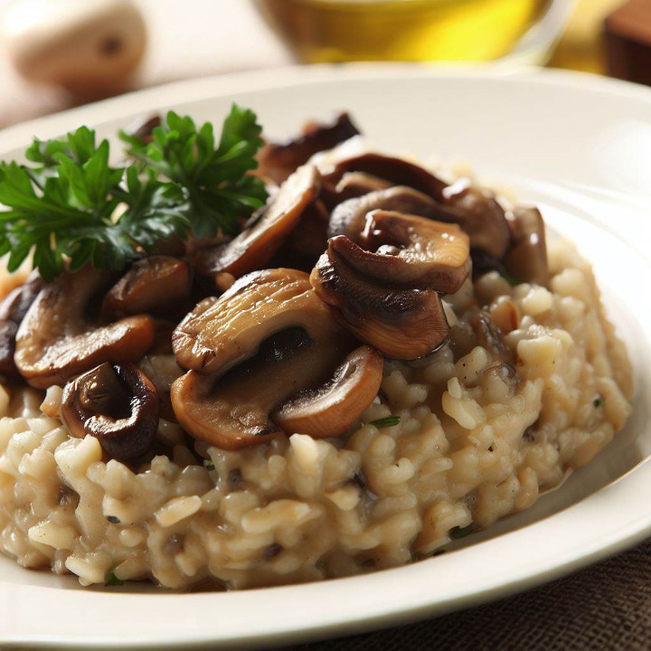

Recettes végétariennes sucrées
Risotto aux Champignons

Aujourd'hui, je vous emmène dans un voyage culinaire vers l'Italie, le pays des saveurs envoûtantes et des mets délicieux.
Imaginez-vous dans une petite trattoria italienne, entouré de l'ambiance chaleureuse et des arômes alléchants qui flottent dans l'air. Et au centre de ce tableau, trône un plat iconique : le risotto aux champignons.
N'ayez pas peur de vous aventurer dans la cuisine italienne, car le risotto aux champignons est un plat qui peut être préparé par tous, du chef cuisinier le plus expérimenté au novice enthousiaste. Suivez simplement les étapes simples de la recette et vous serez récompensé par un festin divin qui saura combler toutes les attentes.
Préparation
15 min
Cuisson
30 min
Portions
4
Niveau
Moyen
Calories
400 kcal
Ingrédients
- 2 tasses de riz Arborio
- 250g de champignons (Paris ou pleurotes), tranchés
- 1 oignon, finement haché
- 2 gousses d'ail, émincées
- 4 tasses de bouillon de légumes chaud
- 1/2 tasse de vin blanc sec
- 1/2 tasse de parmesan végétalien râpé
- 2 cuillères à soupe d'huile d'olive
- 2 cuillères à soupe de beurre végétalien
- Sel et poivre au goût
- Persil frais, haché (pour la garniture)
Ustensiles nécessaires
- Une grande poêle ou une sauteuse
- Une spatule ou cuillère en bois
- Une casserole pour le bouillon
- Une louche
- Un couteau
- Une râpe à fromage
Préparation
- Dans une grande poêle à feu moyen, faites chauffer l'huile d'olive et le beurre végétalien. Ajoutez l'oignon et faites-le revenir jusqu'à ce qu'il soit transparent. Ajoutez l'ail et les champignons, faites sauter jusqu'à ce que les champignons soient tendres et dorés. Réservez une poignée de champignons pour la garniture.
- Dans une casserole séparée, portez le bouillon de légumes à ébullition, puis réduisez à feu doux pour le maintenir chaud.
- Ajoutez le riz Arborio à la poêle avec les champignons et mélangez bien pour enrober chaque grain. Laissez cuire pendant environ une minute, puis ajoutez le vin blanc. Laissez le riz absorber le liquide tout en remuant constamment.
- Une fois que le vin est presque complètement absorbé, ajoutez une louche de bouillon chaud au riz. Continuez à remuer constamment jusqu'à ce que le liquide soit presque entièrement absorbé. Répétez cette étape en ajoutant une louche de bouillon à la fois. Le processus prendra environ 20 à 25 minutes jusqu'à ce que le riz soit al dente et crémeux.
- Lorsque le riz est cuit à votre texture préférée, retirez la poêle du feu. Ajoutez le parmesan végétalien râpé et mélangez jusqu'à ce qu'il fonde. Assaisonnez avec du sel et poivre selon votre goût.
- Servez le risotto dans des assiettes creuses. Garnissez-le des champignons sautés réservés et de persil frais haché.
Accompagnements suggérés
- Salade d'épinards et de fraises : une salade fraîche et colorée.
- Légumes rôtis au four : courgettes, poivrons ou carottes pour ajouter couleur et texture.
Accords vins
- Vin blanc sec : Chardonnay, Sauvignon Blanc ou Pinot Grigio avec des notes minérales.
- Vin rouge léger : Pinot Noir, Gamay ou Merlot pour des notes fruitées.
- Vin effervescent : Prosecco ou Cava pour une fraîcheur agréable.
Conseils et astuces
- Utilisez du riz Arborio de bonne qualité pour obtenir la meilleure texture crémeuse.
- Assurez-vous de bien faire revenir les champignons pour qu'ils développent leur saveur et leur arôme.
- Ajoutez le bouillon chaud progressivement et remuez régulièrement pour libérer l'amidon du riz et créer une texture crémeuse.
Bon appétit et bon voyage gustatif !